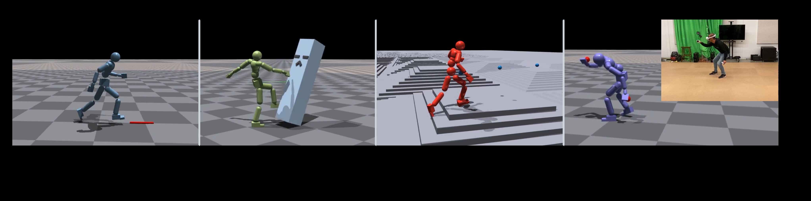
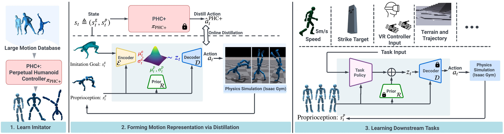
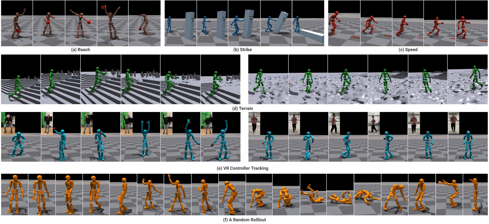
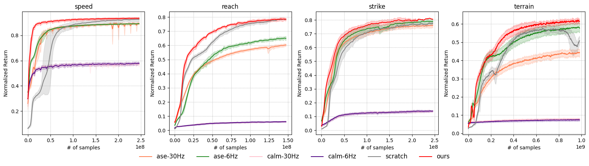
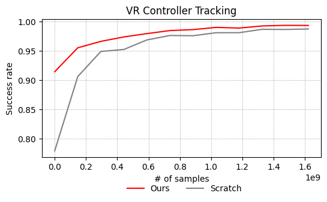
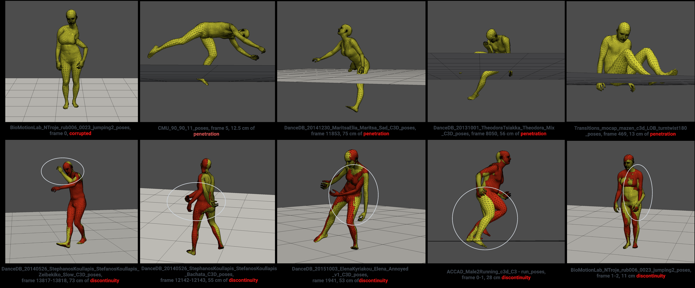

UHMP: Universal Humanoid Motion Representations for Physics-Based Control
论文信息: ICLR 2024, Meta Reality Labs + CMU
Authors: Jialong Li, Xiangyu Xu, Minshuo Chen, Mengyi Shan, Haizhou Ge, Yandong Guo, Jingdong Wang, Tuo Zhao
Link: [2310.04582] Universal Humanoid Motion Representations for Physics-Based Control
项目主页: https://universal-humanoid-motion.github.io/
核心本质
这篇论文的核心本质，是建立了一套业界通用的成熟运动控制范式（Pipeline），用以解决动画数据与物理控制之间的巨大鸿沟（Gap）。
1. 核心目标

- 构建一个统一的运动表示（Unified Motion Representation）：使用隐变量 z 作为通用语言，同时支撑动作的自然多样性与物理的稳定性。
2. 核心困境（为什么需要这套范式）
- MoCap 生成模型（如 CVAE）：动作自然、丰富、像人，但物理不稳定，仿真里会摔倒。
- 纯轨迹优化（TO/MPC）：物理极其稳定、可控制，但动作单调死板，无法覆盖 MoCap 里的复杂动作，且计算缓慢。
- 矛盾：追求多样性就不稳，追求稳定就不多样。
3. 解决方案与关键流程（取其精华）
作者没有抛弃任何一方，而是用三级跳的策略，完善了一套成熟范式：
第一阶段：建立动作先验（Motion Prior）—— PHC+ Imitator

- 手段：利用大规模 MoCap 数据（如 AMASS）训练 CVAE
- 关键创新：PHC+ (Progressive Humanoid Control+) 使用渐进式训练策略
- 从 3 个基础动作原语（primitives）开始
- 逐步增加动作复杂度
- 在 AMASS 数据集上达到 100% 成功率（这是蒸馏能成功的前提！）
- 作用：让网络从无标签数据中自动学习动作的隐语义 z。这一步决定了智能体能做的动作广度与多样性
第二阶段：成熟的轨迹优化与蒸馏（Distillation）
- 手段：作者自研了一套非常成熟、高质量的全身轨迹优化器。它虽然慢，但能在物理仿真里算出稳定、自然、物理正确的参考轨迹
- 关键操作：利用这套优化器作为"老师"，对 CVAE 的解码器（Decoder）进行知识蒸馏
- 蒸馏 Loss 公式（变分信息瓶颈）：
L = L_action + αL_regu + βL_KLL_action：动作重建损失L_regu：正则化项L_KL：KL 散度，约束 z 接近先验分布β使用退火策略（annealed schedule），从 0 逐渐增加
- 目的：在不破坏统一表示 z 的前提下，把物理稳定性灌进网络
第三阶段：高层强化学习（High-level RL）
- 手段：固定蒸馏好的 Decoder 作为底层执行器，训练上层 RL 策略
- 作用：RL 只负责输出指令 z，实现简单、灵活的高层语义控制
4. 最终成果与贡献

- 统一表示 z：现在的 z 既代表了 MoCap 里的丰富动作语义，也代表了物理上的可执行状态。
- PHC+ 100% 成功率：在 AMASS 数据集上实现完美跟踪，证明动作先验质量足够高
- 范式确立：这篇论文真正的历史贡献，是定型并普及了这套 Prior（先验）+ Distillation（蒸馏）+ RL（高层控制） 的标准流水线。后来所有人做基于物理的角色控制，基本都在沿用这套成熟的框架
- 下游任务验证：
- 复杂地形穿越（Terrain Traversal）
- VR 动作追踪（Motion Tracking）
5. 不可回避的局限性（因果真相）

- 虽然动作变稳了，但天花板依然被轨迹优化器锁死。
- 因为依赖轨迹优化生成数据，所以该系统能做的动作受限于优化器的求解能力。
- 注意：论文实验展示了复杂地形穿越和 VR 动作追踪，但更复杂的跳跃、翻滚、交互动作仍受限于优化器能力。
详细技术流程

阶段 1：Motion Prior（动作先验）—— PHC+ CVAE 训练
作用：从动作捕捉数据学习统一、丰富的语义隐空间 z
学习类型：监督学习（变分自编码器）
- 输入：s^p + s^g-mimic
- 标签：MoCap 动作数据
- Loss：重建 Loss + KL 散度
核心作用：把目标转化为行动
- 输入模仿目标 s^g-mimic（来自动作捕捉）
- 学习输出对应的动作 a（PD 控制器目标）
与标准 CVAE 的区别
| 组件 | 标准 CVAE | UHMP Motion Prior |
|---|---|---|
| 输入 | 数据 x（如图像、姿态序列） | 本体感知 s^p（关节位置、速度） |
| 条件 | 外部标签 c（如类别、文本） | 模仿目标 s^g-mimic（来自动作捕捉） |
| 输出 | 重建输入 x̂ | 动作 a（PD 控制器目标） |
| Prior | p(z|c) = N(0,I) 固定 | R(z|s^p) = N(z | μ^p_t, σ^p_t) 可学习 |
| 训练目标 | 数据重建 | 动作重建 + 物理稳定性 |
| 训练策略 | 单次训练 | PHC+ 渐进式（从 3 个原语开始） |
本质区别：
UHMP 不是"标准 CVAE"，而是披着 CVAE 外衣的动作生成模型——框架思想一样，但每个组件都为控制任务重新设计了。
-
网络架构：
Encoder: E(z | s^p, s^g-mimic) → 计算隐变量 z Decoder: D(a | s^p, z) → 输出动作 a（PD 控制器目标） Prior: R(z | s^p) → 可学习的高斯先验s^p：本体感知状态（proprioception），包括关节位置、速度等s^g-mimic：模仿目标（来自动作捕捉数据）- Prior 灵感来自 HuMoR：
R(z|s^p) = N(z | μ^p_t, σ^p_t)
-
训练数据：原始 MoCap 动作数据（AMASS），无标签，包含走路、跑、蹲、转身等大量人类动作
-
PHC+ 渐进式训练：
- 从 3 个基础动作原语（primitives）开始
- 逐步增加动作复杂度
- 达到 100% AMASS 成功率
为什么需要渐进式训练？
原因 1：降低优化难度
AMASS 包含的动作复杂度跨度大：
- 简单：站立、慢走、转身
- 中等：快走、跑步、下蹲
- 复杂：跳跃、翻滚、舞蹈
直接全部训练 → 网络偏向简单动作，复杂动作学不会
渐进训练 → 先学会基础，再扩展复杂度
原因 2：保证物理稳定性
UHMP 的 CVAE 最终要用于物理控制：
- 输出动作 a → PD 控制器目标 → 物理仿真执行
如果直接学复杂动作：
- 基础平衡能力没学会 → 仿真中摔倒
- 动作质量差 → 蒸馏阶段无法收敛
渐进训练 → 确保基础动作足够稳定
原因 3：避免 KL Collapse（CVAE 经典问题）
CVAE 的 ELBO 损失：
L = 重建项 - KL 散度
KL Collapse 现象：
- Decoder 太强 → 不需要 z 也能重建
- 网络忽略隐变量 z
- z 失去控制多样性能力
渐进训练的作用：
- Phase 1：网络必须用 z 区分"站立"vs"走路"vs"转身"
- 养成"依赖 z"的习惯
- 后期不会轻易抛弃 z
本质：这是 **Curriculum Learning（课程学习）**思想的体现——先易后难，让网络逐步掌握复杂技能。
- 目标：重建动画姿态，学习自然动作规律，z 代表动作风格/类型
阶段 2：Motion Distillation（动作蒸馏）—— 用轨迹优化器训练 Decoder
作用：把物理稳定性灌进网络，保留 z 不变
学习类型：监督学习（不是强化学习）
- 有明确的输入：s_t + z
- 有明确的标签：轨迹优化器输出的动作
- 有监督 Loss：MSE 重建损失
核心作用：让行动变得稳定
- 阶段 1 的 Decoder 能生成动作，但可能物理不稳定
- 阶段 2 用轨迹优化器的"标准答案"微调，保证物理稳定
蒸馏关系
老师：轨迹优化器 (Trajectory Optimizer)
↓ (生成"标准答案")
学生：Decoder
↓ (学习模仿)
输出：物理稳定的动作
- 用到的关键模块：作者自研的成熟、高质量、全身轨迹优化器（Trajectory Optimizer）
- 轨迹优化器的作用：以 MoCap 为参考，在物理仿真中计算出稳定、不摔倒、符合动力学的姿态序列
- 蒸馏数据：轨迹优化器生成的物理稳定姿态序列（"老师"的标准答案）
- 网络：只使用阶段 1 训练好的 CVAE Decoder（解码器）
- Decoder 输入：当前物理状态 s_t + 隐变量 z
- Decoder 输出：动作 a（PD 控制器目标）
- 训练目标：让 Decoder 输出尽量逼近轨迹优化器的稳定姿态
- 注意：这一步只微调 Decoder，不改变 z 的语义空间。
Decoder 的演进：阶段 1 vs 阶段 2
| 方面 | 阶段 1 Decoder | 阶段 2 Decoder |
|---|---|---|
| 网络结构 | 相同 | 相同（同一网络） |
| 权重 | 从 MoCap 学习 | 在阶段 1 基础上微调 |
| 输出特性 | 像 MoCap 动作 | 像轨迹优化器输出（物理稳定） |
| 训练数据 | 原始 MoCap | 轨迹优化器生成的数据 |
| 目标 | 重建动画姿态 | 逼近物理稳定动作 |
关键设计：如何保证微调后还能"接上"？
-
Encoder 和 Prior 冻结
- 阶段 2 只更新 Decoder 权重
- Encoder 和 Prior 保持不变
- z 的语义空间不被破坏
-
小学习率微调
- 阶段 2 使用比阶段 1 更小的学习率
- Decoder 只小幅调整，不颠覆阶段 1 学到的内容
-
KL 正则约束
L = L_action + αL_regu + βL_KL- L_KL 项约束输出不要偏离原始分布太远
- 防止"微调过头"
-
实验验证
- 阶段 3 能正常学习复杂任务（地形穿越、VR 追踪）
- 证明 Encoder-Prior-Decoder 仍然兼容
本质：阶段 2 是兼容性微调，不是重新训练——Decoder 变了，但和 Encoder/Prior 的接口（z 的语义）保持一致。
如果阶段 2 还是不能保证稳定怎么办？
问题：为什么阶段 2 可能失败？
| 原因 | 说明 | 解决方案 |
|---|---|---|
| 轨迹优化器本身失败 | 某些 MoCap 动作在物理上不可执行 | 筛选数据集，剔除无法优化的动作 |
| Decoder 容量不足 | 网络太小，学不会复杂映射 | 增加网络层数或宽度 |
| 微调过头 | 学习率太大，破坏了阶段 1 的语义 | 降低学习率，增加 KL 权重 |
| 蒸馏数据不足 | 轨迹优化器生成的样本太少 | 增加蒸馏数据量，多次迭代 |
论文中的保障机制：
-
PHC+ 100% 成功率
- 阶段 1 已经达到 AMASS 完美跟踪
- 基础动作质量有保证
-
轨迹优化器是物理正确的
- 基于优化方法（不是学习）
- 生成的动作天然物理稳定
-
提前终止（Early Termination）
- 如果 Decoder 输出导致摔倒，立即终止
- 让训练专注于成功的样本
-
渐进式蒸馏
- 先蒸馏简单动作（走路、站立）
- 再蒸馏复杂动作（跑步、跳跃）
极端情况：
如果某些动作确实物理不可执行（如 MoCap 数据有穿透、抖动），轨迹优化器会失败，这些动作会被剔除出训练集。UHMP 承认"不是所有 MoCap 动作都能物理实现"，这是合理的取舍。
与 HuMoR 的关系：
- Prior 设计
R(z|s^p) = N(z | μ^p_t, σ^p_t)灵感来自 HuMoR - 但 UHMP 进一步将先验用于下游物理控制任务
阶段 3：High-level Control（高层强化学习）
作用：学习用 z 控制角色完成任务
学习类型：强化学习
- 没有标签，只有奖励信号
- 需要探索（从先验 R(z|s^p) 采样 z）
- 目标：最大化累积奖励
核心作用：生成任务目标
- 阶段 1-2 已经学会"能走起来"和"怎么走"
- 阶段 3 只学习"往哪走"（根据任务目标选择 z）
网络状态：
- Decoder D：固定（阶段 2 蒸馏后的版本）
- Prior R：固定（阶段 1 训练好的版本）
- Encoder E：不使用（任务阶段不需要编码）
- 高层策略 π_task：可训练，学习输出合适的 z
为什么 Decoder 和 Prior 固定后还能工作？
阶段 1 + 阶段 2 训练完成后：
┌──────────────────────────────────────┐
│ Encoder E: z 的语义空间已学会 │
│ Prior R: 能根据 s^p 生成合适的 z │
│ Decoder D: 能根据 z 输出稳定动作 │
└──────────────────────────────────────┘
↓
阶段 3：固定底层，只训高层
- Decoder 和 Prior 构成"动作执行器"
- 高层策略学习"如何选择 z"
- 就像学会了"开车"，只需要学"往哪开"
类比：
阶段 1-2：培训司机（学会开车技能） 阶段 3：安排任务（学习如何送货、载客、赛车） 司机已经会开车了，只需要知道目的地
三阶段学习类型对比
| 阶段 | 方法 | 学习类型 | Loss/信号 |
|---|---|---|---|
| 阶段 1 | PHC+ CVAE | 监督学习 | 重建 Loss + KL 散度 |
| 阶段 2 | Distillation | 监督学习 | MSE（模仿轨迹优化器） |
| 阶段 3 | High-level Policy | 强化学习 | 任务奖励 |
三阶段核心作用对比
| 阶段 | 核心作用 | 输入 | 输出 |
|---|---|---|---|
| 阶段 1 | 把目标转化为行动 | 模仿目标 s^g-mimic | 能生成动作的 CVAE |
| 阶段 2 | 让行动变得稳定 | 轨迹优化器的"标准答案" | 物理稳定的 Decoder |
| 阶段 3 | 生成任务目标 | 任务目标 s^g | 选择哪个 z（动作指令） |
关键结论：
UHMP 只有阶段 3 是强化学习，阶段 1 和 2 都是监督学习。 这与 ASE/AMP 等直接使用对抗学习 +RL 的方法有本质区别。
阶段 1-2 解决了"能走起来"和"怎么走"，阶段 3 只负责"往哪走"。
与传统端到端 RL 的对比
| 方法 | 需要学什么 | 难度 |
|---|---|---|
| 传统端到端 RL | 目标→行动→稳定 一起学 | 地狱级 |
| UHMP | 阶段 1：目标→行动 阶段 2：行动→稳定 阶段 3：任务→目标 | 简单级 |
为什么 UHMP 更简单？
- 传统 RL：同时学太多东西，探索空间巨大，容易学到"奇怪但有效"的步态
- UHMP：分层击破，每层专注一件事，底层用监督学习保证质量
6. 与论文199（ASE）的对比

6.1 它们是不是都在解决"通用性"？
是，但不是同一种通用性。
两篇论文都在回答同一个大问题：
如何让物理角色控制摆脱"一个任务训一个策略"、"一个动作写一套跟踪器"的低通用性困境？
但它们切入的是这个问题的不同侧面：
- 论文199（ASE）：主攻任务通用性 / 技能复用性。目标是先预训练出一个可复用的技能库，再让上层策略在新任务里调用这些技能。
- 论文191（UHMP）：主攻动作通用性 / 运动表示统一性。目标是用统一隐变量 z 覆盖丰富的动作语义，同时通过蒸馏把这些动作变成物理可执行的控制表示。
所以更准确地说：
- ASE 在解决：学到的能力能不能跨任务复用？
- UHMP 在解决：大量动作能不能被统一表示，并稳定落地到物理控制？
6.2 两者的共同点
-
都引入了隐变量 z 作为高层控制接口
- 都不是直接让 RL 输出低层关节控制，而是先输出一个更抽象的 latent code。
- 这意味着高层决策与低层动作生成被解耦。
-
都采用分层控制结构
- 高层策略负责选择 latent 指令。
- 低层模块负责把 latent 指令变成物理动作。
-
都试图摆脱传统逐动作跟踪、逐任务手工设计的范式
- 都代表了从"手工指定控制逻辑"转向"学习统一运动先验"的趋势。
6.3 两者最关键的差异
| 维度 | 论文199：ASE | 论文191：UHMP |
|---|---|---|
| 核心目标 | 技能可复用、跨任务迁移 | 动作表示统一、物理稳定可执行 |
| 通用性的类型 | 任务通用性 | 动作通用性 |
| z 的本质 | 技能索引 / 技能地址 | 动作语义表示 |
| z 的来源 | 训练中随机采样，并通过互信息约束赋予语义 | 从 MoCap 数据中通过 CVAE 学出来 |
| 低层控制器 | 预训练技能策略 (\pi(a|s,z)) | 蒸馏后的 Decoder |
| 关键训练机制 | 对抗模仿 + 技能发现 + 两阶段训练 | 动作先验 + 轨迹优化蒸馏 + 高层 RL |
| 主要优点 | 下游任务迁移快、技能可复用 | 动作自然性与物理稳定性结合得更成熟 |
| 主要瓶颈 | 技能语义较隐式，仍偏 locomotion/基础技能 | 上限受轨迹优化器能力限制 |
6.4 最重要的一点：它们都用了 z，但 z 不是同一种东西
这是最容易混淆、但也是最关键的区别。
ASE 的 z："技能索引"
- z 更像一个人为构造的技能地址空间。
- 论文通过互信息最大化，强迫不同 z 对应不同行为模式。
- 因此 z 的目标是：让系统拥有一组可区分、可调用、可复用的技能。
可以理解为：
- z1 可能对应走路
- z2 可能对应跑步
- z3 可能对应转身或攻击
所以 ASE 的 z 首先服务的是技能复用。
UHMP 的 z："动作语义码"
- z 是从大量动作数据中通过 CVAE 自动学出的连续语义表示。
- 它不是先验定义好的技能编号，而是 MoCap 分布压缩后的连续表达。
- 随后作者再用轨迹优化蒸馏，把这个语义空间变成物理稳定、可执行的控制空间。
所以 UHMP 的 z 首先服务的是统一表示大量动作。
一句话概括：
ASE 的 z 是"给高层策略调用技能用的地址"； UHMP 的 z 是"从动作数据中学出来的统一语义表示"。
6.5 从研究脉络上看，它们是什么关系？
它们不是简单的谁替代谁，而是同一研究脉络中两条互补路线：
- ASE 强调：先把大量技能学出来，并让它们能迁移到不同任务。
- UHMP 强调：先把大量动作压缩进统一表示，再通过蒸馏获得物理上稳定、易控的执行器。
如果把"通用物理角色控制"看作最终目标，那么：
- ASE 更像是在回答：如何做出一个可复用的技能库？
- UHMP 更像是在回答：如何做出一个统一且稳定的运动表示层？
两者合起来，才更接近真正的通用角色控制系统。
6.6 与 ControlVAE 的对比
| 维度 | ControlVAE (202) | UHMP (191) |
|---|---|---|
| Prior 设计 | 状态条件高斯 p(z|s) | 可学习高斯先验 R(z|s^p) |
| 训练方式 | 世界模型监督学习 | 轨迹优化蒸馏 + RL |
| 多样性保证 | KL 散度 + 数据平衡 | 变分信息瓶颈 |
| 下游任务 | 梯度优化 | 高层 RL 策略 |
共同点：
- 都使用可学习的先验分布（非固定标准正态）
- 都用Decoder作为底层控制器
- 都支持多种下游任务
关键区别：
- ControlVAE 用世界模型进行监督学习，UHMP 用轨迹优化器蒸馏
- ControlVAE 的 prior 依赖完整状态 s，UHMP 的 prior 仅依赖 proprioception s^p
七、关键公式总结
蒸馏 Loss（变分信息瓶颈）
L = L_action + αL_regu + βL_KL
β使用退火策略，从 0 逐渐增加
Learnable Prior（灵感来自 HuMoR）
R(z|s^p) = N(z | μ^p_t, σ^p_t)
网络架构
Encoder: E(z | s^p, s^g-mimic) → 隐变量 z
Decoder: D(a | s^p, z) → 动作 a（PD 目标）
Prior: R(z | s^p) → 可学习高斯先验
高层策略
π_task(z | s^p, s^g) 从 R(z|s^p) 采样用于探索